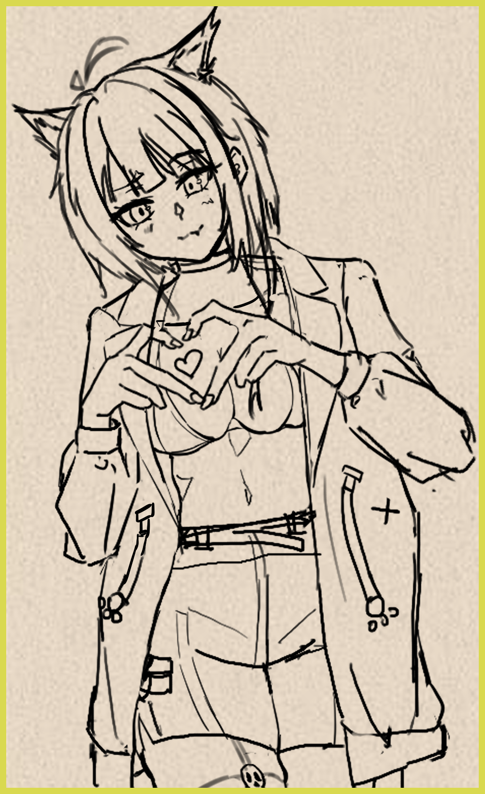

---煙花不生氣---  一切從2020平淡的一天開始 假日我看著插畫網站裡的插畫，想著照著圖片用鉛筆畫出來，畫在數學筆記本上，雖然不太像也沒有顏色，但我居然能畫出這麼好看的東西欸! 之後自學了一段時間，發覺這樣沒有學習基礎很難進步，開始去畫室學習素描、排線、水彩、麥克筆。 上了大學後學了更多的事物：攝影、剪輯、劇本、人體、MV、特效。 希望我能創作出美的作品，讓人看到後能開心一點，祝大家每天開心，享受每一天。